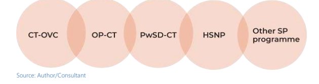
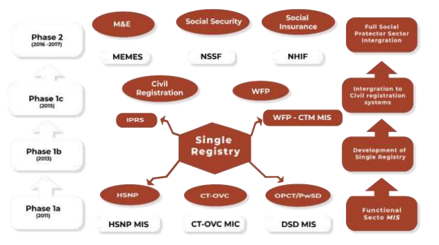
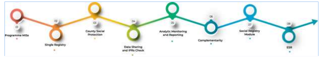
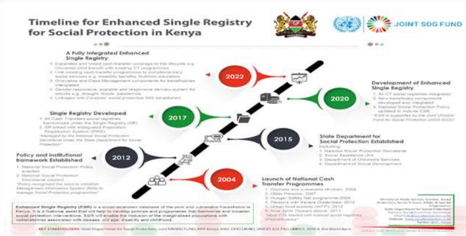
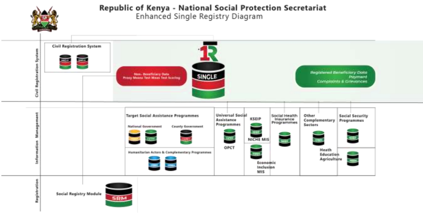
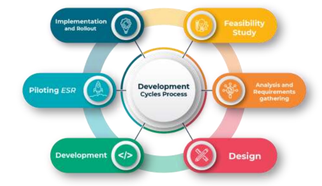
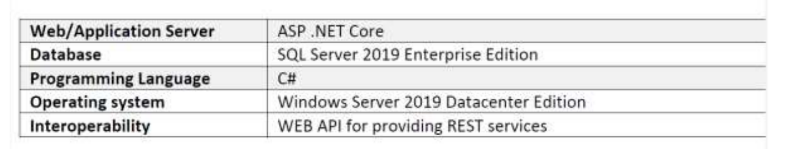
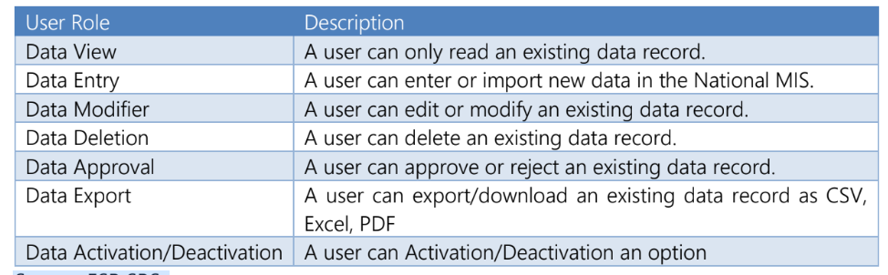

Background Of Social Protection In Kenya
In Kenya, Social Protection (SP) is defined as policies and actions, including legislative measures, that seek to enhance the capacity and opportunities for the poor and vulnerable to improve and sustain their livelihoods and welfare; enable income-earners and their dependants to maintain a reasonable level of income through decent work; and ensure access to affordable health care, social security, and social assistance5. It spells out the three components of social protection— health care, social security, and social assistance. One of the government’s primary goals is to reestablish the National Health Insurance Fund (NHIF) as a fully-fledged, comprehensive national health insurance programme to cover all Kenyans and those who cannot pay for Medicare through the social health care component6. Two, the government, in collaboration with stakeholders, plans to establish comprehensive social security arrangements that will extend legal coverage to all workers in the formal and informal sectors and their dependants through social security7 . Plans are under way to include making membership of social security schemes compulsory and enforce compliance for those able to contribute, review and adjust governance and management arrangements8 . Three, the aim of social assistance is to provide minimum income protection (a "safety net") for particularly poor and vulnerable citizens9 .
Social Protection in Kenya has continued to grow in leaps and bounds since 200410. Its implementation over the years is supported by contributory and non-contributory SP programmes, as well as by state and non-state actors. In Kenya, the phrase "social assistance" refers to non-contributory social assistance programs designed to keep the poor and those vulnerable to shocks from slipping below a specific level of poverty. Social protection in Kenya is anchored mainly on three instruments, i.e., the Constitution of Kenya 201011, Kenyan Vision 203012, and the Kenya National Policy on Social Protection (KNPSP)13, which was revised in 2019. The constitution of Kenya 2010 14is a progressive instrument that provides, inter alia, the right to social protection under the Bill of Rights chapter, articles 43(1) and 43(3), which spells out that “every person has a right to social security” and sanctions that “the state shall appropriate social security to persons who are unable to support themselves and their dependents,” respectively.
The Constitution of Kenya, 2010, also, in articles 2(5) and 2(6), makes general rules of international laws and conventions or treaties ratified by Kenya as part of its law, respectively. This way, Kenya follows the principles on social protection outlined under the Universal Declaration of Human Rights (1948), UN and International Labour Organization (ILO) conventions, the African Charter on Human and Peoples’ Rights (1981), and the East African Community Common Market Protocol, among others (GoK,2011)15
The Vision 203016is a long-term development blueprint for the country with a social pillar that aims to improve the quality of life for all Kenyans by targeting a cross-section of human and social welfare projects and programmes, and also makes special provisions for Kenyans with various disabilities and previously marginalized groups. In this respect, the vision seeks to “build a just and cohesive society with social equity in a clean and secure environment”, reduce poverty through investing in vulnerable groups and recommends the establishment of a Consolidated Social Protection Fund, and makes special provision for those who live in marginalized areas and has a goal to “increase opportunities all-round among women, youth, and all disadvantaged groups” (GoK, 2008). In the last five year, 2017 – 2022, however, the vision was anchored under the Big Four Agenda, whose component of social protection programming captured Universal Health Care (UHC)17, Food and Nutrition, and Security and Housing as well.
The National Safety Net Programme (NSNP) was established in September 2013 as part of the government’s initiative to enhance social protection delivery in the country (National Social Protection Secretariat, n.d.)18. It was specifically established to provide a common operating framework for the government’s four cash transfer programmes, i.e., Persons with Severe Disabilities Cash Transfer (PwSD-CT), Older Persons Cash Transfer (OP-CT), Cash Transfer for Orphans and Vulnerable Children Cash (CT-OVC) and the Hunger Safety Net Cash Transfer (HSNP).
The social protection programmes are shown in the figure 1.1 below:
Figure 1.1: The Social Protection Programme
The introduction of these social protection programmes has been gradual with the introduction of CT-OVC19 in 2004 to meet the needs of the country’s increasing number of children made vulnerable by poverty and HIV/AIDS, followed with the OPCT was started in 200720. OP-CT provides regular cash transfer support to poor and vulnerable older persons (aged 65 years and above). It was rolled out as a pilot programme in three districts—Thika, Nyando, and later Busia— under the Rapid Response Initiative (RRI)21 and later became a universal progamme funded by the government. In 2011, PwSD cash transfer programme was launched to target adults and children with severe disabilities who require full time support of a caregiver. Additionally, the State Department for Social Protection introduced a Hunger and Safety Net Social Programme (HSNSP) in 2008 to support some of the most vulnerable groups in Northern Kenya22. The HSNP programme has been implemented in two phases23. Phase 1 began with a pilot programme running from 2008 to 2012, while Phase two (HSNP2) of the programme started in 2013. The overall objective of HSNP is to reduce extreme hunger and vulnerability by delivering regular and unconditional cash transfers to targeted households.
NSNP builds on the government’s commitment to reducing poverty, as articulated in Kenya Vision 2030. So far, the Government has registered over 1.38 million people in all the counties in Kenya as beneficiaries (Strategy for enhancement of Single Registry, MOLSP, 2020).
Background of Enhanced Single Registry in Kenya
Between 2015 and 2019 the State Department for Social Protection developed a Single Registry that consolidates programme and beneficiary information from the different management information systems (MIS) for the SP programmes run by the government. The goal of establishing the Single Registry MIS is to provide accurate and analytical reports on the performance of the social protection sector24. The objectives of the program are as follows:
i. Provide increased harmonization and consolidation of fragmented social protection schemes through comprehensive oversight of all social protection initiatives
ii. For better communication to the general population and target audiences
iii. To provide a single platform where common and essential information across social protection programmes are stored, analyzed and reported for the benefit of the stakeholders.
iv. To provide checks against one beneficiary receiving multiple benefits within and across programme
v. Helps in the elimination of fraud by ensuring that beneficiary details are verified electronically against the 30 million National Population Registry (IPRS) database. This ensures that the programmes pay only genuine beneficiaries.
vi. Strengthen Monitoring &Evaluation of National safety Net Programme by providing reports against indicators on a bi-monthly, Bi-annually and annual basis based on established monitoring and evaluation framework.
vii. Expose potential area(s) for social protection effort(s)
The following are some of the benefits of the Single Registry: (i) Efficient program monitoring; (ii) Reduced double registration; (iii) Increased transparency and accountability; (iv) Seamless and efficient transfer of data; (v) Enhanced quality of operations and services for field officers; and, (vi) Baseline Data for future programs
Though this was achieved, each of the programs feeding into the Single Registry were still performing their own registration and targeting processes which resulted in overlapping activities and duplication of effort with possibilities of collecting data from households already registered by another program. This often resulted in community fatigue, inefficient use of resources and a lack of standardized data. To try resolve this, the Government developed a strategy to enhance the Single Registry towards bridging this gap and thus the advent of the Enhance Single Registry (ESR).
Standardized guidelines and streamlining of, for example, targeting, levels and types of transfers, Management Information Systems (MIS), Registries or Databases of all beneficiaries and programmes, as well as the simplification and consolidation of registration functions, was also required. This led the government to recognize the need to establish one common Information System to manage Social Protection in the country. This resulted in the creation of the Single Registry, an integrated beneficiary registry (IBR) that aggregates all data on program beneficiaries from all Social Protection programmes lined up in the Single Registry (SR) and offers a centralized reporting platform for the SP sector. This resulted in the creation of the Single Registry, an integrated beneficiary registry (IBR) that aggregates all data on program beneficiaries from all Social Protection programmes lined up in the Single Registry (SR) and offers a centralized reporting platform for the SP sector. The information system also allowed for the documentation of the outcomes of various interventions schemes, the informing of stakeholders on the state and efficacy of Social Protection programmes, and generation of political support for them.
Rationale for development of the ESR
Among the enhancements made to the existing Single Registry included the addition of the:
▪ Social Registry that captures data of poor and vulnerable households’ potential beneficiaries who may be eligible for social protection services provided by state and non-state partners in Kenya. The complementary module therefore compliments the ongoing efforts by Government of Kenya (GoK) to map complimentary services relevant to beneficiaries in the SR and builds the foundation for wider use of SR data as a common policy platform for poverty and vulnerability analysis.
▪ Look and feel customization of the Single Registry site to improve the appearance and user experience.
▪ Generic County MIS - development of the generic county SP MIS that allows the Single Registry to link to SP programmes run by county governments and other actors at county level for purposes of reporting.
▪ Complementarity and robust reporting modules: This phase involved the enhancement of the reporting and query functions of the current single registry to include data from the social registry and complementary module. The enhancement phase involved an expansion to accommodate more data bases (Social Registry, more analytical layers and, integration of additional matching procedures.
Evolution of the Kenya Social Protection Registry System
This section provides the historical background and evolution of the ESR from its inception where programme MISs were developed and strengthened, to the design and development of the Single Registry and finally how Single Registry was enhanced and finally evolved into Enhanced Single Registry Platform.
Evolution of ESR in Kenya
The ESR in Kenya began as a strategy to strengthen social protection linkages with other social protection stakeholders and programmes as well as overall framework for the enhancement of the existing single registry for social protection25 . It is also relatively new area in the implementation of social protection programing in the wider Eastern and Southern Africa region, as well as Kenya. The ESR is part of the expansion of the Single Registry whose growth and development involved varied stakeholders including line ministries and development partners in the sector.
The evolution of the ESR has been through a journey initiated first through the design and development of the Single Registry which occurred between 2015 and 2019 as a core component of the WFP’s Complementarity Initiative in Kenya26 . Government contracted an IT Vendor through support from the then Department for International Development (DFID) and subsequently, WFP to work with the National Social Protection Secretariat to build the Single Registry. The design and development of the Single Registry involved the following activities:
1. upgrading four of the individual programme-level MISs to robust and scalable web-enabled platforms;
2. building an automated link between the Single Registry and the Integrated Population Registration Service (IPRS) to support the National ID online validation process;
3. enabling the automatic transfer of data between programme level MISs and the Single Registry;
4. improving reporting tools to engage stakeholders by introducing dashboards
5. Developing a geo maps for online visual reporting.
for social protection effort(s)The Single Registry enabled the government of Kenya to link together the MISs of five social protection programmes (OPCT, PWSD-CT, CT-OVC, Hunger Safety Net programme, and Urban Food Subsidy Programme). Furthermore, the Single Registry was linked to the National Registration database, such that programme could correctly verify beneficiary details using their National ID. Figure 2.1 depicts the evolution of single registry from the programme MIS enhancements to the conception of single registry and finally its launch.
Figure 2.1: Evolution of Single Registry - from conception to launch
Source: Single Registry manual
The introduction of the Single Registry increased transparency, accountability, and the functioning of the social protection programmes in Kenya. Previously, social protection actors were unable to answer the simple question of who was receiving what within each social protection programme. The registry linked data from the disparate SP programmes MIS’ into one coherent viewing platform, providing a means of managing and cross-referencing the information.
The National Social Protection Secretariat (NSPS), with support from development partners,’ supported the process of enhancing the Single Registry to be responsive to broader social protection needs. The following enhancements were undertaken in the Single Registry:
(i) development of complementarity module to support automated data sharing and feedback mechanism
(ii) development of a generic County Social Protection (SP) MIS
(iii) development of a dynamic Application Programming Interface 27(API) for linking other SP sectors to the Single Registry.
(iv) Development of a social registry module.
The additional modules developed resulted in the launch of the “Enhanced Single Registry of Kenya”, which could perform the functions of the Single registry and the Social Registry28 . The Single Registry enhancements have been developed on a rolling basis, starting with the establishment of Single Registry developed by linking the Programme MISs with the Single Registry to create the integrated beneficiary registry, establishment of County Social Protection MIS, improvement of the data sharing module and linkage to the Integrated Population Registration System (IPRS) 29 , the development of the Analytics, Monitoring and Reporting functionality, design and development of the Complementarity module, and the design and development of the Social Registry Module. All the enhancements made on the Single Registry finally evolved into the Enhanced Single Registry of Kenya. Figure 2.2.2 below depicts the modular development approach that was employed.
Figure 2.2: The modular development approach
Timelines for Enhance Single Registry for Social Protection in Kenya
The timelines for the development of the ESR30 are outlined below starting from the recent activities to when the SP Programmes were launched.
2004: Launch of cash transfer programmes
▪ Orphan and vulnerable children, 2004
▪ Older persons, 2008
▪ Urban food subsidy , (WFP) 2012
▪ Inua Jamii 70 years and above , 2017
2012: Policy and institutional framework established
▪ National social protection policy enacted.
▪ National social protection secretariat established.
2015: State Department for social protection established including
▪ National Social Protection Secretariat
▪Social assistance Unit (SAU)
▪ Department for Children Services
▪Department for Social Department
2017: Single registry developed
▪ All cash transfers social registries harmonized under single registry (SR).
▪ SR linked with Integrated Population Registration System (IPRS)
▪ Managed by the national social protection secretariat under the state department for social protection
2020: Development of Enhanced Single Registry
▪ All CT social registries integrated.
▪ New beneficiaries’ components developed and integrated
▪ National social protection policy updated to include ESR
▪ESR is supported by the joint UNSGD fund for social protection (2020-2022)
2022: A fully integrated enhanced single registry
▪ Expanded and linked cash transfer to life cycle e.g. universal child benefit with existing CT programmes
▪ Linked existing cash transfer programmes to complementary social services e.g. disability benefits, nutrition education.
▪Grievance and case management components for beneficiaries integrated.
▪Gender responsive, scalable and responsive delivery system for shocks, e.g. drought, flood, and pandemics.
▪ Linkage with counties social protection MISs established32
The dates and significant turning points in the development of the Enhanced Single Registry are summarized in Figure 2.4.
Figure 2.4: Timeline for Enhancement of Single Registry
Source: National Social Protection Secretariat/ Information Centre
Development of the Enhanced Single Registry
This section provides the methodologies used during the design and development of the ESR and some of the key considerations based on lessons learned and best practices both during ESR development and implementation, as well as lessons from other MIS and registry’s international best practices highlighted in the lessons learnt and best practices chapter.
The development of the ESR has been an elaborate process that involved and offered a significant learning experience for social protection actors within the Ministry of Labour and Social Protection at the national government and county governments, the World Food Programme (WFP), and other partners, including the Ministry of Health (MoH), Ministry of Interior (MoI), the World Bank (WB), the Foreign, Commonwealth, and Development Office (FCDO), the United Nations Children's Fund (UNICEF), the International Labour Organization (ILO), and the Food and Agriculture Organization (FAO), among others who have an interest in the system.. Figure 3..1 provides the ESR architecture,.
Figure 3.1: Enhanced Single Registry architecture
Source: Single Registry manual
Background Of Social Protection In Kenya
The ESR system’s was built using the Agile Methodology where development is iteratively and incrementally executed by developing its components on a rolling basis, starting with establishment of Social protection Programmes MISs, establishment of Single Registry developed by linking the Programme MISs to create an integrated beneficiary registry, establishment of County Social Protection MIS, improvement of the data sharing module and linkage to the Integrated Population Registration System (IPRS) 34, development of the Analytics, Monitoring and Reporting functionality, design and development of the Complementarity module, the design and development of the Social Registry Module.
This Agile methodology 35was used to develop ESR in a modular approach (Modules developed on a rolling basis) which allowed developers to focus on keeping the process lean and goes through a number of iterations before anything is final. By building on top of the existing modules, it promotes flexibility and eases the system’s steady development into a more complex form.
Figure 3.2 below illustrates the development of each module in a format that summarizes the six phases:
Figure 3.2: Development Cycle
Source: Author/consultant
The details of the phases are below:
▪ Feasibility Study: To explore possibility of developing and maintaining the ESR
▪ Analysis and Requirements gathering: Providing detailed features of the ESR to be developed
▪ Design: Designing the ESR based on the analysis and requirements gathered.
▪ Development: Involves the development, programming and coding of ESR.
▪ Piloting ESR: Piloting the ESR in the identified counties.
▪ Implementation and rollout: National Rollout of the ESR.
Technology
Hardware
The ESR is hosted in the NSPS Data Centre located at the NSPS. The Data Centre has servers with adequate memory, disc space, and processing capacity.
Software
All software development was done by an outsourced software firm, and hardware is maintained by the ESR Unit Technical Team. DOTNET Core components are used in the application layer. Business logic has been developed using C#. The system’s application layer includes Windows 2019 servers, Database layer, and Microsoft SQL Server as shown in the figure below:
Figure 3.3: ESR development software environment
Information Security and Data Protection Policies
Beyond the core staff of ESR Unit, the ESR is accessed by other Social Protection programmes personnel, including social development officers both at national and county level, NGOs and academia. The most risks associated with this kind of a system are corruption of data and protection of privacy. The access to the data is highly controlled to prevent any tampering or manipulation. Security is particularly important because the system contains both Person identifying information (PII)and financial information for citizens. The ESR Unit has taken several steps to secure access to the system and protect data.
Each user is given access to specific parts of the system based on their specific roles and responsibilities. This system prevents unauthorized persons from gaining access and allows the ESR Unit to monitor usage. All queries made in the system are logged which indicates the type of information that was queried, by whom, and on what date. Transactions in the system are logged and monitored for system audit purposes.
Controls are placed on the ability to edit data, making it impossible to update or delete records without authorization. The database is further controlled through data scripts following each update that will prompt and alert if data are inconsistent or if an error is detected. Authorized software developers are alerted of the error immediately.
The ESR MIS Unit staff who are responsible for providing database updates to ESR are given access to the system via the VPN. Permission for this access is tied to the staff member’s computer and is limited.
The system’s hardware is also protected with security measures, and system rooms are monitored by cameras and sensors. Unauthorized staffs are not allowed to enter the system rooms. Entry to the room is enabled through use of electronic access card and biometric reader for fingerprint verification.
User Roles
User roles refer to a specific function that grants specific rights to a user or a user profile. The terms “user group roles” and “user roles” are used interchangeably. Table 3.1 shows the eight user roles that are available in ESR.
Table 3.1: User roles
Source: ESR SRS
A user profile can be granted to at least one user role. A user profile may be assigned to more than one user role or group role in any instance where a user can enter and approve data, but the user is not able to approve their own data record that they had entered into the ESR MIS. In all instances of approving data, a different user approves or rejects the submitted data record.
As one user profile may have access to more than one ESR MIS component, a user profile may be granted one set of rights for one software feature or module and a different set of rights for another software feature or module. For example, a user profile, such as a supervisor within the social registry component, can be granted Data Approval in the Registration module and may be granted Data View in the Grievances and Complaints Management module. The ESR MIS maintains a user access matrix that shows various user group roles assigned to the various user profiles and the ESR MIS components assigned to the various user profiles.
Data Protection
Data protection is a set of strategies and processes used to secure the privacy, availability, and integrity of data. Additionally, it is essential for any organization that gathers, manages, or storage of sensitive data. The legislation on protection law outlines what has to be done to guarantee that everyone’s data is used properly and fairly. Best practice include that countries could comply to international data transfer and information privacy protocols, and implement legislations on collection, transfer, and storage of information. This becomes even more important where data is shared across a public network and several institutions. When data is exchanged across several organization and a public network, this becomes more crucial.